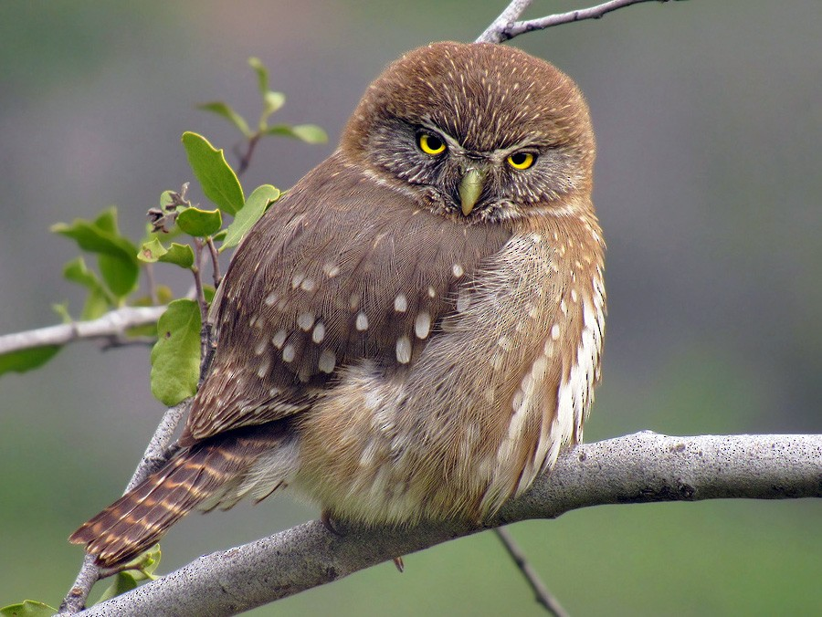
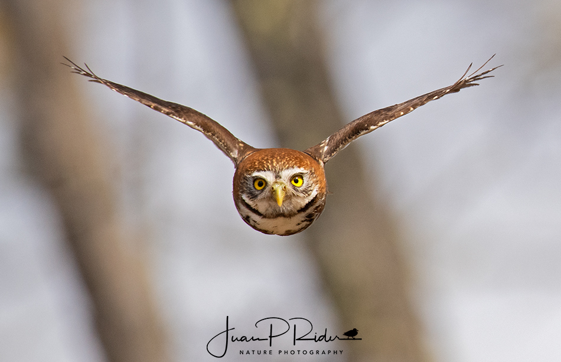

Informacion General
Nombre Científico: Glaucidium nanum
Distribución: Habita en el sur de Chile y Argentina

Es un ave rapaz nocturna que se encuentra en los bosques templados de Chile y Argentina. Su plumaje es marrón con manchas claras, lo que le permite camuflarse perfectamente entre las hojas y ramas.
Su canto es característico y se escucha en las noches de primavera y verano. Se alimenta principalmente de insectos, pequeños mamíferos y aves.
Es un ave solitaria y territorial, y su presencia es un indicador de la salud del ecosistema en el que habita. Su población ha disminuido en algunas áreas debido a la pérdida de hábitat y la caza.
Tambien es un ave emblemática de la cultura chilena, y su imagen se utiliza en diversas obras de arte y literatura. Es un símbolo de sabiduría y conocimiento en la mitología indígena.
El Chuncho es un ave fascinante que merece ser protegida y conservada en su hábitat natural. Su belleza y singularidad la convierten en una de las aves más queridas de Chile.